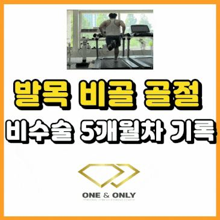
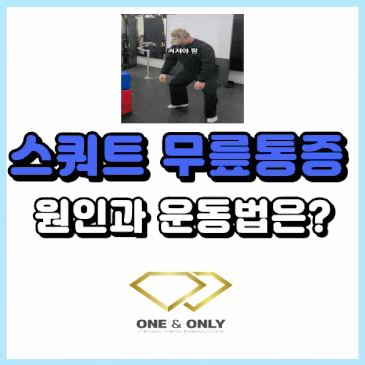
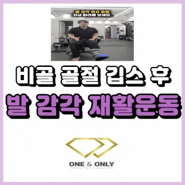

PT 후기·운동정보
새 영상과 글이 올라오면 여기에도 자동으로 올라옵니다
유튜브 건강신동 동훈쌤과 네이버 블로그의 최신 후기·운동 정보입니다.
유튜브 영상 전체
채널에서 전체 보기 ↗영상 오른쪽 위의 목록 버튼을 누르면 쇼츠를 뺀 전체 영상을 골라 볼 수 있어요. 새 영상은 올리는 즉시 여기에도 추가됩니다.
최신 블로그 글
블로그에서 전체 보기 ↗
비골 골절 비수술 5개월차 회복 기록 : 한발 점프 가능?비골 골절이 되고 비수술 치료를 하고 있는 동훈쌤이에요. 참고로 지금 이 블로그를 쓰는 시점은 7개월 차에 접어들었는데 오늘은 저의 비골 골절… 요가할 때 허리가 아프다면? 허리 통증의 원인과 운동요가할 때 허리가 아프다면? 복직근 스위치를 켜보세요. 예전부터 지금까지 많은 분들이 요가를 하고 있으시죠? 요가를 하다가 허리가 아팠던 경험…
요가할 때 허리가 아프다면? 허리 통증의 원인과 운동요가할 때 허리가 아프다면? 복직근 스위치를 켜보세요. 예전부터 지금까지 많은 분들이 요가를 하고 있으시죠? 요가를 하다가 허리가 아팠던 경험…
스쿼트 무릎 통증 왜 생길까요?스쿼트할 때 무릎 통증 생기는 분들 있으시죠? 과연 근육이 없어서 스쿼트할 때 무릎 통증이 생길까요? 오늘 포스팅을 보시면 조금 생각이 바뀔 수…
비골 골절 깁스 후 발 감각 재활 운동비골 골절되고 나면 수술을 하거나 비수술로 치료를 하거나 일단 깁스를 하죠? 저도 비골 골절되고 깁스를 했어요. 저는 26년 2월 25일에 비골…
짧은 영상은 여기서
어디가, 언제부터 불편한지
편하게 말씀해 주세요
첫 시간은 상담과 움직임 평가부터 진행합니다.